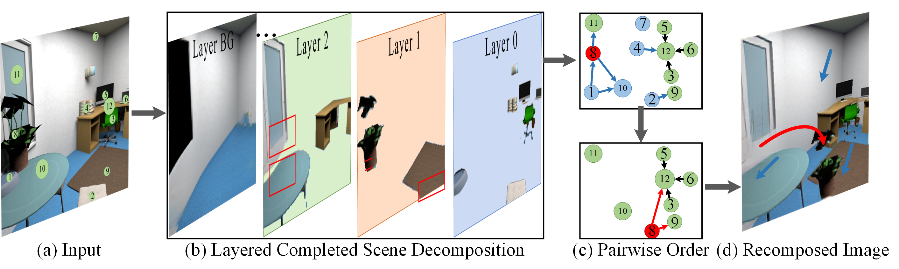
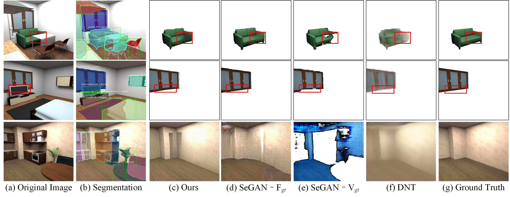

Visiting the Invisible: Layer-by-Layer Completed Scene Decomposition

Existing scene understanding systems mainly focus on recognizing the visible parts of a scene, ignoring the intact appearance of physical objects in the real-world. Concurrently, image completion has aimed to create plausible appearance for the invisible regions, but requires a manual mask as input. In this work, we propose a higher-level scene understanding system to tackle both visible and invisible parts of objects and backgrounds in a given scene. Particularly, we built a system to decompose a scene into individual objects, infer their underlying occlusion relationships, and even automatically learn which parts of the objects are occluded that need to be completed. In order to disentangle the occluded relationships of all objects in a complex scene, we use the fact that the front object without being occluded is easy to be identified, detected, and segmented. Our system interleaves the two tasks of instance segmentation and scene completion through multiple iterations, solving for objects layer-by-layer. We first provide a thorough experiment using a new realistically rendered dataset with ground-truths for all invisible regions. To bridge the domain gap to real imagery where ground-truths are unavailable, we then train another model with the pseudo-ground-truths generated from our trained synthesis model. We demonstrate results on a wide variety of datasets and show significant improvement over the state-of-the-art.
Video
Framework
- Layer-by-Layer Completed Scene Decomposition (CSDNet)

Given a natural image, the layered scene decomposition network comprehensively detect all objects in it. For each candidate instance, it outputs a class label, a bounding-box offset, an instance mask and an occlusion label. The system will select out the fully visible objects in each step. The completion network will complete the resultant holes with appropriate imagery. The next step starts again with the completed image.
Synthetic Data Creation

Building a large dataset with complete ground-truth appearances for all objects is a high-effort and high-cost due to it needs to collect the visual ground truth for all complete objects, including both visible and invisible region. Hence, such datasets are very limited. To mitigate this issue, we rendered a realistic dataset with Maya using the SUNCG CAD dataset. Each rendered scene is accompanied by a global semantic map and dense annotations for all objects.
Results
- Layer-by-Layer Completed Scene Decomposition(Synthetic)
Given a single RGB image, the system has learned to decompose it into semantically complete instances (e.g. counter, table and window) and the backgrounds(wall, floor and ceiling), while completing RGB appearance for invisible regions. Columns labeled S1-5 show the completed results layer-by-layer. In each layer, fully visible instances are segmented out, and after scene completion some previously occluded regions become fully visible in the next layer. The process will stop when it is unable to detect any more objects. The system also builds the pairwise order using the occlusion relationship and the detected out layer.

- Visiting the Invisible Region(Synthetic)
The proposed CSDNet can automatically detect and complete the originally occluded object, without any visible ground truth or manually input mask.
- Layer-by-Layer Completed Scene Decomposition(real)
We also extend the layer-by-layer completed scene decomposition method to real images. It is able to decompose a scene into completed instances with correct ordering. The originally occluded invisible parts of "suitcase", for instance, is completed with full shape and realistic appearance. Note that, the system is a fully scene understanding method that only takes an image as input, without requiring the other manual annotations as SeGAN (Ehsani et al., 2018) or PCNet (Zhan et al., 2020).

- Amodal Instance segmentation(real, without visible gt)
The system can generate amodal instance segmentation mask as it detects the fully visible objects in each step. Unlike the existing works that requires the ground truth annotations as input, the proposed only requires a RGB image as input, and it can detect some unlabeled instances in the ground truth.

- Free-Form Image Editing(without manual mask)
The proposed new completed scene completion task has wide applications as it fully decompose a scene into complete instance. We illustrate some image editing and scene re-composition applications of this novel task. In these cases, we directly modified the positions and occlusion ordering of individual objects. Then, we can create a realistic new scene.